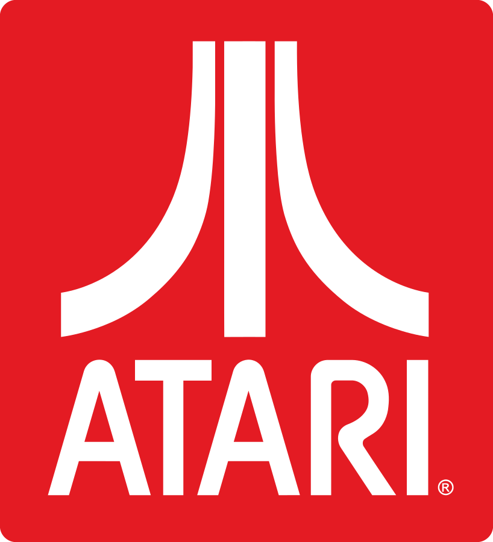
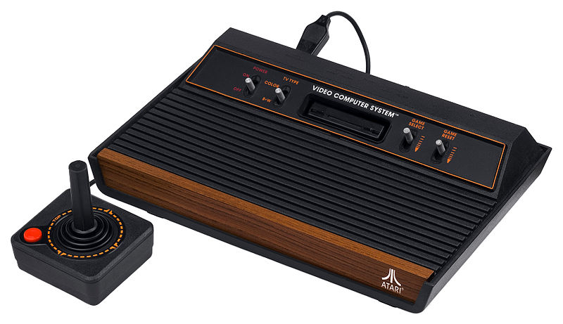
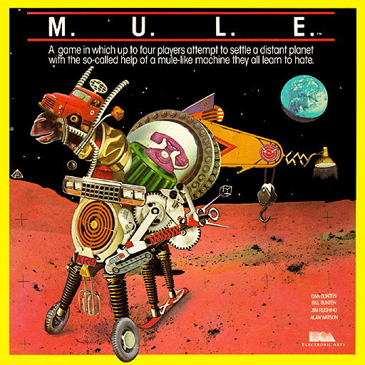
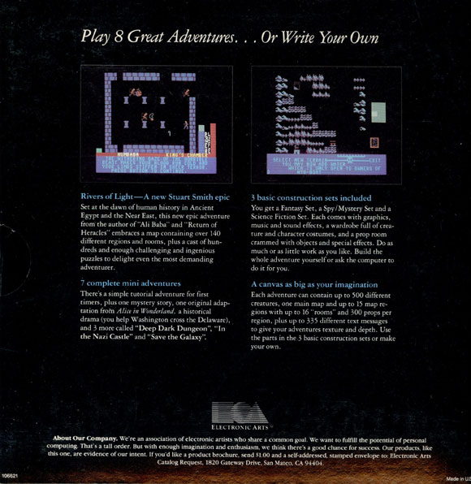

Video Game: History, Industry, Society, and Creativity
Lecture 5
Atari and Electronics Arts
Atari
Atari 2600, the dominant console of 2nd gen video games
Nolan Bushnell founded Atari in 1972
- Bushnell and his co-founder, Ted Dabney, each put US$250 to found Atari.
- Atari worthed $28 million after 5 years. (56000 times of US$500!)
- Allan Alcorn was hired by Atari and he created Pong.
A week after Pong was installed in a bar,
the machine was out of order.
Allan Alcorn found out the problem was:
it was overflowing with coins.
- Atari had a very nice working environment. Casual dress code (T-shirts and jeans). No set working hours. Parties, and beers, when meeting revenue goals.
- Atari posted an ad that read “Have fun, make money.”.
- It attracted a dirty, smelly, bearded, long hair "hippie freak", saying he's not going to leave until Atari hires him.
- Allan Alcorn interviewed him and hired him for $5.00 per hour as a technician.

The "hippie".
Steve Jobs.
Breakout
Steve Jobs prototyped Breakout!
- Atari had an idea of creating a single-player version of Pong.
- Jobs was offered US$700, with a bonus for every chip fewer than 50. Jobs promised to complete a prototype within four days.
- Jobs asked his friend Steve Wozniak(HP employee) to help design the circuit board.
- They completed the task, and Jobs got a bonus of $5000, but he only paid Steve Wozniak $350...
- Steve Wozniak designed the board so compact (and complex), that Atari was unable to manufacture...
- Steve Wozniak's design used 42 TTL, Atari's final version used ~100 TTL.
Atari also produced home computers
- Atari 800 was a home computer which its architecture evolved as an upgrade of the Atari 2600.
- Atari wanted to port the BASIC programming language to the Atari 800.
- They contracted a young developer, named Bill Gates, to do so.
- Bill Gates failed to complete the project... probably spent all his time on DOS for IBM...
- An Atari game designer and programmer took over the project instead.
Atari is on Google Play store and iTunes store...
Its website also contains some remakes of its classic games.
Electronic Arts
About EA...
- EA was founded in 1982 by Trip Hawkins (personal investment of ~US$200,000). He was the Director of Strategy and Marketing of Apple before founding EA.
- Hawkins employed a lot of former staff from Apple. Steve Wozniak also sat on the board of directors of EA.
- It is the world's third-largest gaming company by revenue after Nintendo and Activision Blizzard.
- Revenue: US$4.143 billion (2012), Employees: 9,370 (2013)
- Acquired: Playfish(2009), PopCap Games(2011) etc.
Electronic Arts - the name
- EA was originally called Amazin' Software, and the employees disliked the name...
- Hawkins had developed the ideas of treating software as an art form and calling the developers, "software artists".
- Hawkins liked the word "electronic", and various employees considered "Electronic Arts", and finally they agreed.
"Electronic Artists"
- EA routinely referred to their developers as "artists" and gave them photo credits in their games and full-page magazine ads.
- EA also shared a large amount of profit with their developers.
EA's game boxes were look similar to music albums.
at the bottom of the back of a game box:
"We're an association of electronic artists who share a common goal. We want to fulfill the potential of personal computing. That's a tall order. But with enough imagination and enthusiasm we think there's a good chance for success. Our products, like this one, are evidence of our intent."
Sadly EA is not as good as it was...